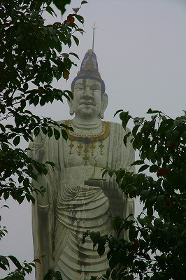

津軽萬人観世音/青森県
あれは去年の暮れ、私が寄稿しているワンダーJAPAN17号の見本誌を見ていたらこんな投稿記事が…

ぶほっ！
何だコリャ!?
大仏ソムリエ兼大仏バリスタである私としては見逃すわけにはいかないぞ！
というかこれだけデカい観音サマの存在を知らなかったとは大仏グルメとして誠にお恥ずかしい限りである。
…というわけでやってきました津軽は岩木山。
岩木山はいわずと知れた津軽の人々の精神的支柱である。
で、その岩木山の東麓に件の大観音はあるという。以前訪れた赤倉霊場のすぐ近くだ。
つか位置的に以前訪問した際にそこは車で通りかかっている筈なのに。
そうだ。思い出した。凄い雨で周りがほとんど見えなかったんだっけ。
…そういえば今も凄い雨なんですけど…しかも霧が凄く濃いんですけど…
結局、目星を付けていた辺りを通り過ぎてしまい、道端で青森名産「嶽きみ」を売っている方に聞いてみたら「この道沿いです」とのこと。えー、また通り過ぎちゃったのー。と慌てて引き返す。あ、でもその前に嶽きみを食べよう。嶽きみというのは軸に大量の黄色い種子が付着した野菜のような果物のような穀物のような食べ物でそれを蒸かして食べるんですけど、凄くおいしかったです。正体はこんなです。
で、嶽きみを食べている間に段々雨が小降りになり霧も晴れてきた。ありがとう。嶽きみ。
さて、前置きが長くなりました、やっと大観音に到着です。
今度はあっさり見つかった。逆にこれだけデカい大観音が見えなかったのか…
入り口に大きな岩が置いてあり車の進入を防いでいる。つまり現役の観音様サマじゃないということなのか。
チョットお参りさせてもらいますよ。
観音像の左側にはログハウス風の建物などがあったが観音サマと関係があるのかすら判らない。
それにしても凄いお顔の観音サマである。

恐いというか何というか、リアルすぎるんだと思う。
そしてこのプロポーション。異様なまでに細長い体躯。
実は最初にワンダーJAPANで見た時からある種の予感があったのだが、それはまた後で話します。
近づいてみると台座には津軽萬人観世音とある。
夏草に覆われているが缶ジュースなどがあげられている。まるっきり放置されているわけでもないのだろうか。

足元は蓮華座の上に花びらのような不思議な飾りが。これもまたどこかで見たような…
そう。
この観音サマ、以前お伝えした千葉にある謎のコンクリ仏に似てませんか？

異様に細長いプロポーション、リアルすぎて恐い表情、台座の花びら…符号する点があまりにも多いのだ。
さらに千葉の観音サマの隣にあったお地蔵さん。
ホラ、激似でしょ。
てな訳で背後に回りこんでみると…
ああ！作者の銘を発見！
やはり千葉のコンクリ仏の作者と同じだ！
何故はるか離れた千葉と青森に同じ作者のコンクリ仏があるのか？
そもそもここの観音サマの正体すら一切不明だ。
観音像以外周囲にはに何の手がかりもないしまた雨が激しくなってきたし、撤収！
今後の宿題がまた増えちゃったよ…
てなわけでこの観音像とか作者の方について何か御存知の方、是非御一報くださいませ。
2011.09.
珍寺大道場 HOME